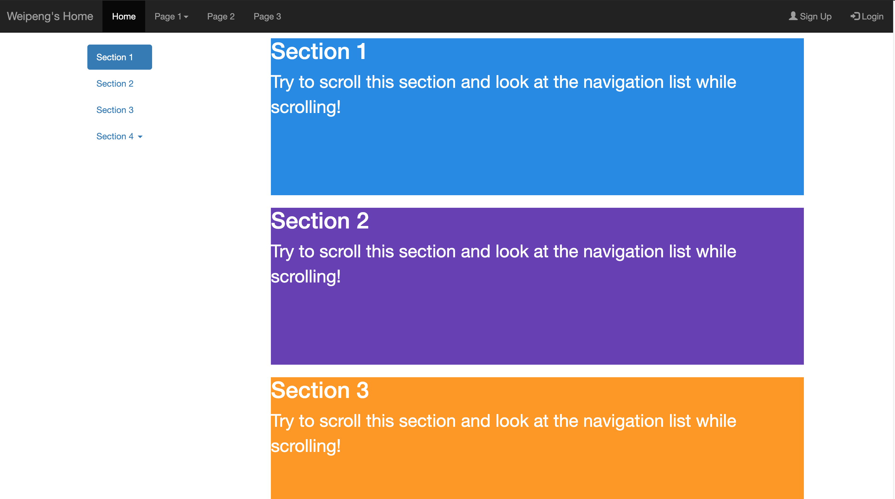
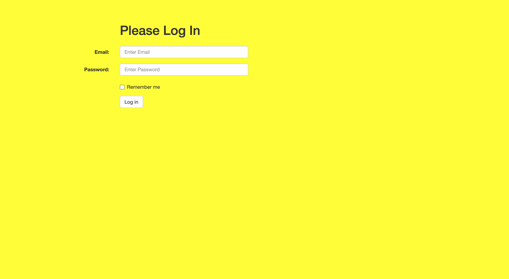

Weipeng's Log Book
Week 1
- May 21, 2020
- Finished project webpage framework
- Finished github set up
- May 22, 2020
- Set up Nucleo board for programming
- Can't set up Atollic, switch to CubeIDE
- Encounter "GDB server" error. Solved by switch power source to ST-link
- May 23, 2020
- continue on Nucleo board programming
- code can be complied and uploaded successfully, when push blue button, difficult to tell if it's triggered because of reciving message
- need to figure out a way to verify message is actually received
- try to work with external button and LEDs
- Buttons are set to active low by default
- Blue Button is PC13
- Pinout Map
Floor Button LED 1 PC13 PA5 2 PC12 PA6 3 PC11 PA7 - set EXIT15_10_IRQHandler() to check which line flag is set, then pass the pin to HAL_GPIO_EXTI_IQRHandler()
- According to the passed-in pin, HAL_GPIO_EXTI_Callback() will set different button flag
- In main function, will send out different floor message according to button flags
- Set up filter
- Assume need to accept ID 0x100 to 0x103
- Set filter.FilterIdHight to 0x0100<<5 (shift 5 digit to 5 because standard ID only has 11 digits)
- Set filter.FilterMaskIdHigh to 0xFF80 (for the 11-digit ID, the left 9 digits have to exact match)
- set sender ID to 0x100 ~ 0x103, the LEDs works properly
- set sender ID to 0x104, the LED does not respond. Filter works properly
Week 2
- May 25, 2020
- Nucleo64 CAN demo wiring diagram

- May 28, 2020
- Update Project Webpage
- Added meta tags
- Added login and request access pages
- Added google map iframe
- May 29, 2020
- Transfer Nishant's finite state machine logic from word to html
- Add basic states diagram and target setting algorithm
Week 3
- June 1, 2020
- Create weekly status report for week 2
- Improve status report page
- Remake resume. The current resume style is not attractive and lack key skill information. Will need to find a good format and fill in skills
- June 2, 2020
- Remake cover letter. The current cover letter lacks the introduction of the school program. Will add a paragraph for it
- Prepare for data com quiz 1
- June 3, 2020
- Prepare for math quiz 2
- Finished math assignment 6. Not sure if using F or f to do the calculate
- June 4, 2020
- Watched Natural Science week 3 lecture 2 part A (part B is not available yet, need to find a time to finish it)
- After discuss the math assignment with Eduard, found my way to do assignment 6 is wrong. For assignment 6b, seems we still lack some knowledge
- Worked on project login and request_access pages. Now the input boxes are aligned
- Add copyright footers to each page
- Finished software assignment#1 Q14-a. Will continue to work on Q14-b

- June 5, 2020
- finished software assignment#1 Q14-b. Will need someone to review the page
- June 7, 2020
- change Eduard's navigation bar a little and generalized it to all our pages
- Try to build a nested dropdown menu, find a source here: https://stackoverflow.com/questions/44467377/bootstrap-4-multilevel-dropdown-inside-navigation
- The nested dropdown doesn't work. The secondary dropdown menu position shifted
- May require JavaScript function to do it?

- June 8, 2020
- remake the project home page with slide show with carousel
- restructure the header with grip. Want the team logo to disappear when window is narrow.
- hasn't found a way to hide the logo. Online sources are more for bootstrap 4: https://mdbootstrap.com/snippets/jquery/ascensus/131016
- Try to change the bootstrap to version 4, need adjustments for the slide show. I can have the slide show works, but the prev and next buttons are invisible. Also the .d-md-none doesn't work well
- Rollback to bootstrap 3 since the slide show buttons' issue

Week 4
- June 11, 2020
- Try to set up LAMP at personal Rpi4
- "sudo apt-get install lamp-server^" didn't work. couldn't find the package. Have to install apache2, php, mySQL, phpMyAdmin individually
- The mysql-client part of the instruction is outdated. Used mariadb-server instead
- Used this resource to finish the rest
- Successfully access the mySQL database and create a new user
- June 12, 2020
- Switch my main workstation to Mac. Set up git, vscode, XAMPP, etc for the project
- Becuase I feel my knowledge regarding HTML, CSS, and JavaScript are not concrete, I decide to take this chance to review web knowledge that is required by the project
- Some project webpage components, such as the navigation bar and bootstrap functionalities are done by others. Need to practise how to make them
- Built a personal practice website from ground up
- Build the same style of nav bar with the help from here
- June 13, 2020
- Continue to practise my web skills on the personal website
- Build a second vertical nav bar, called scrollsp, that can interact with the main content. Get resource from here 
- Built log-in and sign-up pages with bootstrap. Get resource from here 
- Practise putting an image along with inputs
- Try to have image rollover effect on project log in page
- Try to use the pseudo element method (:hover, :active) to make image rollover, but it doesn't work. Guess if the target element is covered by other elements, the mouse event is not triggered
- Use JavaScript to realize the effect. Create a set of 3 images: one for inactive status, one for mouse hover status, and another one for mouse click status
- Create 3 event listener for the button. Then change source image according to coresponding events. The idea was inspired by this.


- encounter issue after Eduard putting navbar and bootstrap codes in one place
- It is quite wired that the same code works in PC, but not at my Mac and Rpi4
- It seems the .php files failed to run properly
- Found the reason: the apache servers in Mac and Rpi4 didn't prioritize index.php over index.html, while the server in PC does so. Just need to specify the page path to index.php, then everything works fine

- June 14, 2020
- Convert my look book to the scrollspy format
- The conversiont didn't go very well. The side navigation list was not highlighted automatically when main content is scrolled.
- Found that if content sections are in different heights, the scrollspy format doesn't work
- Try to convert the daily activity to sub menu items, but still had the same problem
- Cannot have the scrollspy format worked, rollback to original format
- Manually create a side panel and make a ancher list to scroll to weekly contents. Since the top nav bar hides some space, have to wrap the week section into a div and offset each section by 70px
- Beautify the log book with coloured sections and border radius
- June 15, 2020
- After adding .php control on all .html pages, there is repeated issue that a notice of session_start() appears on top of each page.
- The log in page shows error message that the username is missing from php.
- The first issue is caused by using the top_header.php, which includes a session_start() and repeats if top_header.php is called at other .php files
- The second issue happens because the login page starts a session when the page is opened, but the username and password haven't been input yet. Add an authenticate.php to link the login form and remove session_start() from login.php.
Copyright © 2020 Eduard Nishant Ramtin Weipeng